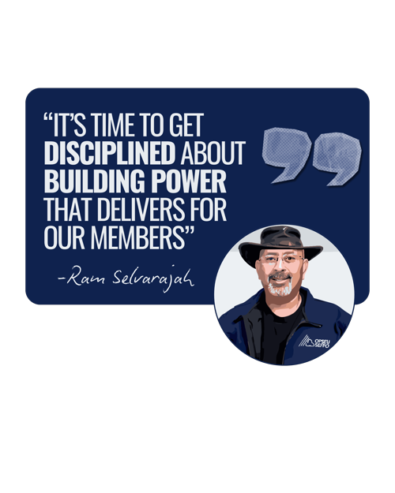
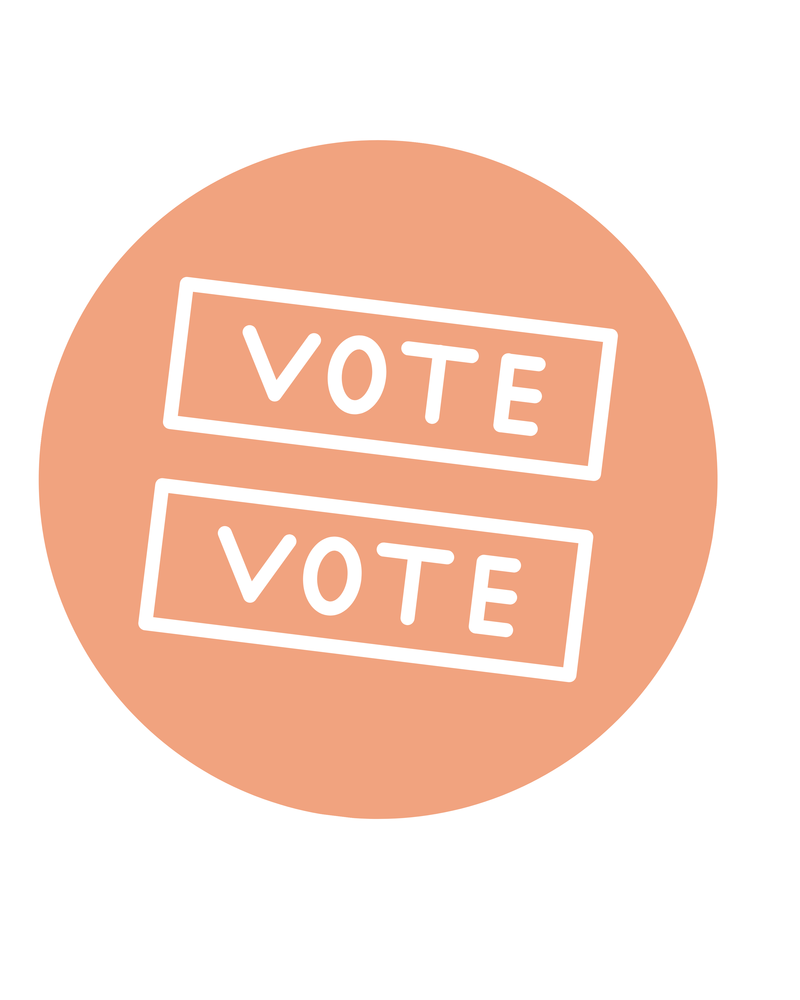
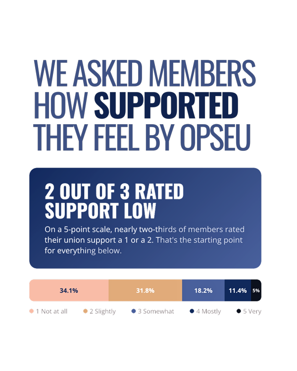
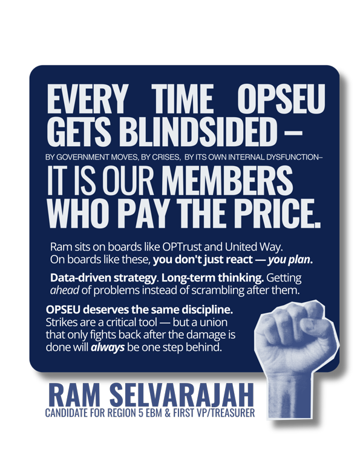
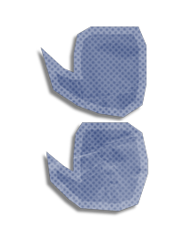
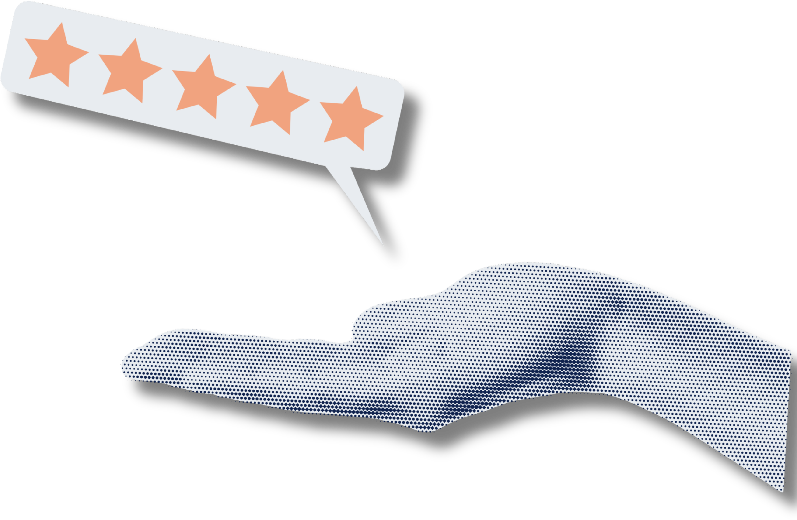
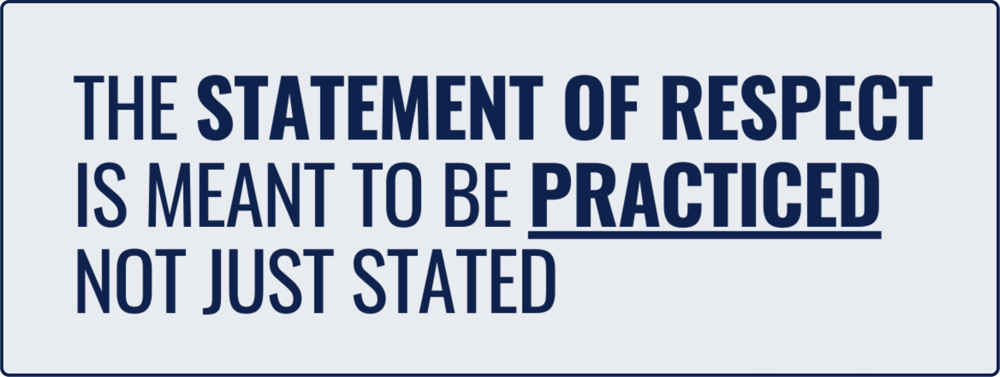

Candidate for Region 5 EBM
First VP / Treasurer
"Ram is the only candidate that is already practicing what he is promising during the election"
— Local OPSEU President, Feb Town Hall




Since November, Ram's hosted OPSEU members across Ontario with one focus: understanding what members are dealing with. Supporters, skeptics, and even other candidates' teams were invited because every member, regardless of whether they agree with Ram, deserves to have their voice heard about what the future of OPSEU should be.
We tracked and analyzed over 800 minutes of community conversations with 200+ members across all 7 regions, with nearly every sector represented. 12 issues kept coming up consistently. Here are the top 6:
You call for help. You get a voicemail. You call again. Nothing.
"We've had about five or six staff reps in the last four years…"
Local presidents are running their locals off the side of their desks.
"Our archaic book-off formula needs to be reevaluated…"
Members want to see where their dues go — and they're not getting answers.
"Way too much money is wasted on inefficient projects…"
We're earning 1995 wages in a 2026 economy.
"We're actually earning circa 1995 wages…"
The systems are stuck in 2005 — and members are paying the price.
"The software is very archaic…"
There's a climate of fear — and members know it.
"Don't play dirty politics in the boardroom…"
+6 more issues identified in cross-sector, cross-region town halls
"This is what financial accountability looks like."
"Not talking about bargaining. Doing it."
"Coalition-building isn't a buzzword. It's the job."
"When he says the systems are broken, he knows what fixing them looks like."
"Trained in fiduciary responsibility and risk management."
"The financial literacy to read budgets. The analytical foundation to understand power."

"I know that unions aren't built in boardrooms; they're built in break rooms, shop floors and the places where everyday members actually work. So, while my experience gives me the tools to do the job, I know it is our members' reality that must set my agenda."
— Ram Selvarajah

"I've argued with Ram and seen his dedication to open communication and considering other views."
— Loretta Clark, Local 123 President
"I have watched Ram in rooms fractured by division, where he remains a steady anchor — calm, cool, and collected in the face of heated debate."
— Cezerina Estrela, OPS Member
"This guy gets things done, and we need somebody who's a person of action with a plan. Somebody who's competent and can successfully troubleshoot for members."
— Chris Draxyl, Local 526 President
"I was truly impressed with Ram's insight at MERC. He did not hesitate to call out the machinations of government abuse, including their extensive and corrosive use of costly consultants as a ploy to escape accountability."
— James Sloots, Past Local President, MERC Vice Chair
"What stands out most about Ram is the way he shows up for people. He takes the time to guide emerging leaders and helps them succeed. He fosters a culture where people feel supported, respected, and connected. He cares about our team not just as colleagues, but as people. This kind of leadership matters because strong unions require this to succeed."
— Jennifer Pouw, 1st Vice President, PRLC
If elected First VP/Treasurer, Ram commits to continuing regular virtual town halls and an open calendar — any member can book time directly at ram4change.ca/book. Because access to your leadership shouldn't end the moment they get your vote.
